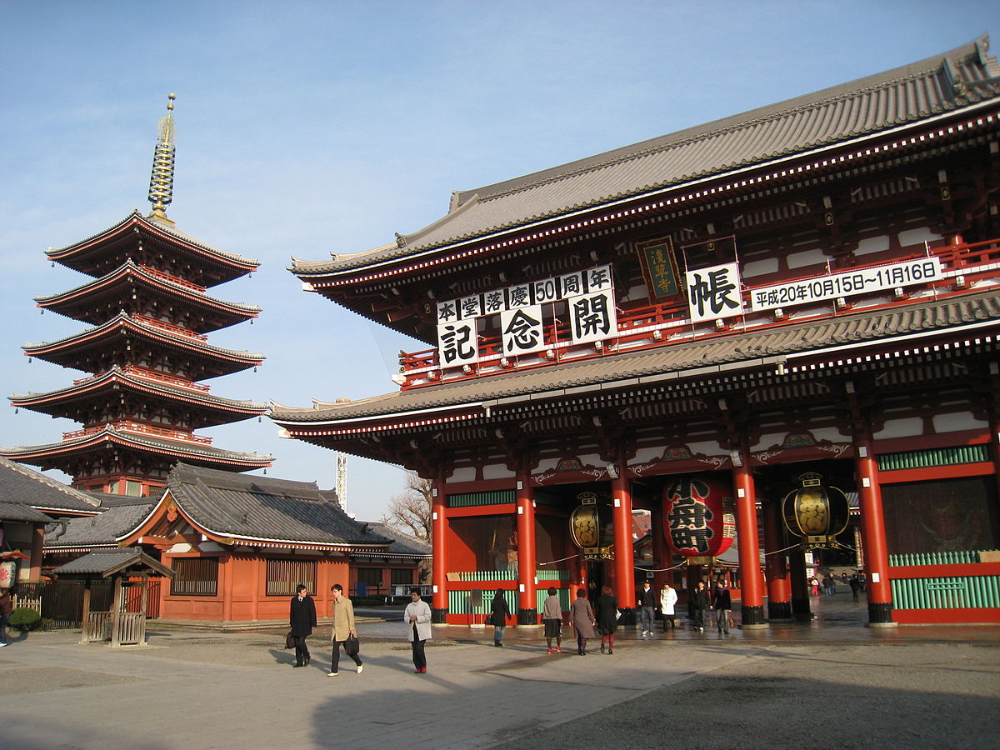
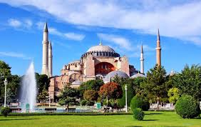

Франция
Столица: Париж
Население: 67 миллионов человек
Официальный язык: Французский
Главная достопримечательность: Эйфелева башня, Лувр, Версаль
Кухня: Круассаны, багеты, сыр, вино
Франция – это страна с богатой историей, культурой и архитектурой. Париж, известный как "Город света", славится своими музеями, художественными галереями и модой. Французская кухня, включающая изысканные блюда, является одной из лучших в мире.

Япония
Столица: Токио
Население: 126 миллионов человек
Официальный язык: Японский
Главная достопримечательность: Храм Фусими Инари, гора Фудзи, Киото
Кухня: Суши, рамен, темпура
Япония – это страна, сочетающая современные технологии и древние традиции. Гигантские города, такие как Токио, сочетают небоскрёбы и храмы. Японская кухня известна своей утонченностью, а природа Японии поражает красотой, особенно во время цветения сакуры.
Турция
Столица: Анкара
Население: 84 миллиона человек
Официальный язык: Турецкий
Главная достопримечательность: Собор Святой Софии, Голубая мечеть, Каппадокия
Кухня: Кебаб, пахлава, лахмаджун
Турция – это страна, которая объединяет восточные и западные традиции. Стамбул, бывший Константинополь, является ключевым культурным и историческим центром страны. Турецкая кухня известна своими пряностями и уникальными сладостями.
